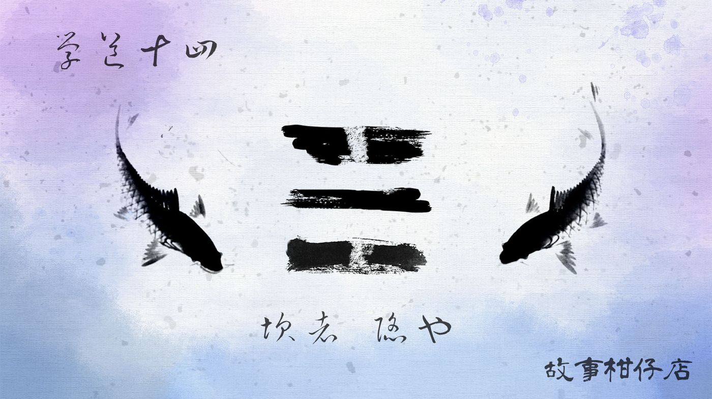

玄墨行者．學道（十四）：坎卦

梳洗得頭乾臉淨的拾兒，換上還有著陽光餘味的粗棉衫，氣焰收斂了七分，畢恭畢敬站在眾師伯師叔面前。
「最後一次機會了，就看祖師留你不留。」天樞說道。
「還真沒想過你得勞駕祖師呢，平時這麼利索，以為那鬼石小妖對你來說太容易。」天璇幾句話夾槍帶棍，又像打翻一甕醋。
「說不定祖師無聊很久了呢，找點事給他們做不是挺好？」拾兒話才剛說完，就被天璣狠狠拍了下後腦勺。
「行了、行了。」天樞不耐制止，一聲令下，七者全數面向壁畫，點燃案上兩邊盤香，天樞持手爐喃喃稟報，末了，率師弟們出了內堂，獨留拾兒一人。
這是規矩。獨坐內堂七天七夜，只進少水，粒米不食，元神回到最純淨狀態，祖師自有定奪。然而會用何種方式表白？從沒有定數。
拾兒轉動了下肩膀，雖然仍是周身痠痛，但經過師父的調養已好得多；臉上那道口子，總算不再如火燒般，只是偶爾抽痛一下，類似牙痛那般埋伏著。
他在內堂正中央盤腿坐下，師父交代他要心無旁騖，可他心中卻是花花世界。一會兒想著婆娑鳥人形居然如此美艷，一會兒猜測大曲當年究竟收了什麼妖才順利成為傳人，一會兒臆測祖師會不會從壁畫上走出來邀他下盤棋。
「小子，最後機會啦，還心猿意馬？」
蒼老聲音像撕裂宣紙的毛邊，拖泥帶水從旁邊廂房傳了出來。
拾兒噤聲，心想這蒙叟會讀心術不成？隔著扇門都知道他心煩意亂。但他轉念一想，也許可多探點情報：
「咳，還說，你給的指示讓我遇上婆娑鳥，要不我早就順利入門啦！」
蒙叟可沒中計，呵呵尖笑，道：「估計羅盤你也沒用上吧？自找的麻煩還要賴我？」
拾兒本還想再回話，蒙叟卻先發制人：「你究竟來扯淡的？還是來求祖師的？」
不敢再回嘴。拾兒坐挺了，閉起眼睛專心打坐。
比兩個手掌大的盤香一點一滴燒小了，縮成一個蝸牛大。對弈的白眉者與佝僂者壁畫，這麼多年，始終停留在一顆不定的棋。拾兒閉眼，恍惚間看見海濤洶湧，好大一條鯨魚驚跳出海，腹部卻破了個大洞。牠拖著道道血絲游過，海蝕洞忽然傳來嬰孩尖聲啼哭––
拾兒被突如其來的幻境嚇得猛然睜眼，覺得渴饑。石洞裡曬不到日出也照不進月光，究竟過了多久，他毫無頭緒，只覺餓得五根清淨，二脈貫通。
盤香氣味熏得他昏昏欲睡，拼了命拉開眼皮卻欲振乏力，朦朧間壁畫上的白眉者似乎轉頭含笑看他。啊，難道祖師有指示了？拾兒更不敢睡，他掐擰大腿提神，忽然間，白眉者與佝僂者竟向他招手。他迷迷糊糊上前觀棋，棋盤內黑白子排成三列，乍看是「川」卻又不是，，左右兩橫都斷成兩截，唯中間那劃從一而終。
「什麼意思啊？別這麼神神秘秘，講清楚點嘛！」
正想著呢，膝頭卻遭猛力一踹，嚇得拾兒端坐起來，玄墨七者將他團團圍住，嚇得他心虛抹掉嘴角口水。
「你睡了整整七天嗎？」天樞冷冷說道，不等拾兒回答，他便向眾師弟說：「這等貪懶小兒，看來祖師是不可能留他了。」
「拾兒，有沒有收到指示？快告訴大師伯。」玉衡焦急問道。
「我......」想起那不明所以的夢境，拾兒也不大好意思明說。挨罵不打緊，就怕又丟師父的臉。
天璣卻像看穿了他的心思，說：「別怕，有什麼不尋常的，就說。」
「我夢見祖師了。」
拾兒重述夢境，天樞聽見奇怪符號現形，臉色凜然：「你畫來看看。」
拾兒手指蘸了點口水，就地畫出。七者面面相覷，天璣率先露出微笑，瑤光開心喊著：「祖師留你呀！太好了！」
開陽跟著嚷道：「多虧你啊，拾兒！否則我們還得跟新傳人磨合，多累啊！」
天權站得遠遠的，背剪雙手，兀自望著壁畫不知想些什麼；天璇很勉強擠出笑容，方硬腮骨顯得歪扭錯落。
還搞不清楚怎麼回事，天璣輕輕推了下拾兒的頭，說：「倒過來看。」
轉了個方向，原來將符號橫著看，就成了個八卦中的「坎」卦。
這下子，他更迷糊了，如何一個「坎」卦，就判定祖師留他？
「還愣著做什麼？備入門禮去喲！」
蒙叟聲音像拖著長長尾巴的輕煙，還有點反應不過來的大夥，既清醒又迷茫地趕緊忙活起來。
－－－－－
#新連載依舊兩天一篇每晚準時六點半喔
#請人客多多指教
#記得去各大書店買我們的書故事柑仔店哩
